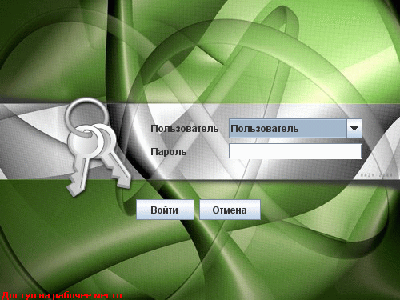

Вход в систему
Доступ в систему осуществляется с учетом прав пользователей и паролей. Права и пароли задаются администратором в компоненте администрирования. Доступ подразделяется на пользовательский, администраторский и доступ к получению отчетов. После запуска приложения предлагается авторизоваться в системе путем выбора авторизуемого пользователя и ввода пароля.
Окно авторизации.

В список пользователей для выбора попадают только те, которые имеют право доступа в соответствующую часть системы. Выберите пользователя, введите пароль и нажмите "Enter" или кнопку "Войти". В противном случае нажмите "Escape" или кнопку "Отмена".
При формировании базы данных создаются два пользователя "Администратор" и "Пользователь". У пользователя "Администратор" есть право администрировать систему. По умолчанию они создаются без паролей.